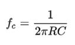

Electrical Systems Description
For the electrical sound system, we purchased a record player cartridge to generate two voltage signals as the needle moves up and down. The needle has a magnet at the opposite end of it and as the needle follows the record grooves, the magnet oscillates between two coils that generate the two voltage signals.

We took the two voltage signals that the cartridge outputs and put them through a three step process. They were amplified, filtered, and then sent to a speaker. We used a breadboard and operational amplifiers to make the voltage signal stronger. The desired voltage strength was chosen by our speaker specifications. On the same breadboard, we created a high-pass and low-pass filter for each signal to remove static. The filters were made with resistors and capacitors. The values for the components were calculated from measuring the frequency of the signals with a multimeter.
The final amplified and filtered signals were sent to a speaker through a cut up aux cord. The aux cord had a wire for each signal making it simple to wire to our existing breadboard. The sound quality improved significantly since the beginning of testing these calculations. All the static was not able to be filtered out because the sound system had to lay close to other electrical components in our overall design.